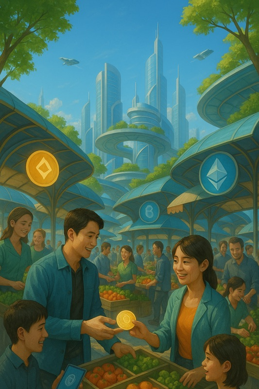

链上商业解决方案
前言

链上商业：第三次商业革命
在过去的商业世界里，“赚钱”等于”赚利润”。但是在链上商业时代，“赚钱”等于”赚流通”。我们发现，真正让人们富有的不是把钱储存起来，而是把钱用在能产生价值交换的地方。“花得越多，赚得越多”的概念不是白日梦，而是建立在区块链技术和去中心化商业逻辑上的现实可能。
新商业文明的基础
链上商业代表了一个全新的商业文明——不是一个单一的平台，而是一个以价值共享、去中介化和信任重构为中心的商业生态系统。它不依赖于任何单一国家或公司，也不以广告投放为中心，而是建立在社区参与和利益共创的基础上。
链上商业的出现不是为了对抗传统，而是为了解决传统商业系统中长期存在的痛点：
- 为什么越来越多商家的利润被平台消耗？
- 为什么增加广告支出不能带来忠实用户？
- 为什么消费者忠诚度不能转化为任何回报？
这些问题不是偶然的——它们源于我们商业设计中的结构性问题。链上商业为这些核心问题提供了一个可部署的解决方案。
从”赚钱”到”赚流通”
什么是”财富”？在农业时代，是土地。在工业时代，是资本和工厂。在数字时代，变成了流量和注意力。但无论时代如何变化，有一个不变的常数：真正的财富来自”流动”。
传统的经济逻辑教我们储蓄——将收入转化为银行存款或房地产资产，以确保未来的安全。然而，在通胀压力和货币超发的情况下，储蓄的购买力每年都在下降。真正带来升值的是流动性。
当资本停滞时，就等于损失。当资本通过流通创造价值时，它不仅不会缩水，还能带来复合回报。这就是”赚流通”的本质逻辑——不是储存，而是让钱在正确的生态系统中流动、创造和重新分配。
信任的演变：从黄金到社区共识
货币的演变其实是”信任凭证”的演变：
- 黄金时代：对货币的信任来自实物资产
- 纸币时代：信任转移到国家和央行
- 数字货币时代：信任建立在算法、共识机制和社区上
比特币和以太坊的成功证明，人们已经开始相信”去中心化”系统可以维持公平透明的价值交换，而不被任何单一实体操控。这为链上商业出现提供了信任的技术基础。
Web3：重构商业规则
Web3代表了下一代互联网，但真正改变商业规则的不仅仅是技术——而是权力结构和价值分配方式的重构。
传统商业逻辑是”中心化的”：数据属于平台，用户只是数据生产者，价值被平台捕获，参与者不能分享利润。规则由平台制定，商家和用户只能接受。
Web3提出了颠覆性逻辑：用户拥有数据，社区共治生态系统，价值增长共享。
这种价值主权让用户真正”拥有自己的经济系统”，迫使平台重新考虑与参与者的关系。通过透明规则、自动执行和公平分配机制，链上商业消除了传统中介剥削，同时创造可持续的价值增长。
链上商业的六大支柱
链上商业系统能够实现实施、扩展和可持续发展，因为其核心在于制度设计——一个由六大支柱组成的商业运营模式：
- 公平利润分享机制 - 每笔交易自动分配收益
- 稳定代币价值支撑模型 - 真实交易支撑，而非投机
- 可扩展的商家成长阶梯 - 从个人创作者到区域网络
- 高信任社区网络 - 网络节点，而非金字塔结构
- 真正的”共享”利润分配 - 用户是节点，而非成员
- 高频次必需场景 - 真实商业，而非概念
这代表了一个可以自我运营、自我扩展、自我升值的商业生态系统，而不是任何公司的”平台系统”。
属于每个人的革命
链上商业正在发起一场真正属于”每个人”的革命。在这场革命中，你不需要背景或大资本——你只需要行动、参与和贡献。
本书将逐步揭示链上商业的出现、运营逻辑、制度设计和全球扩张模式。更重要的是，我希望它能帮助你打开一个全新的视角：在未来，不了解链上商业就像25年前不了解互联网一样。
在未来的商业世界中，流通比拥有更重要。我们站在真正商业革命的门槛上。而你将不再只是参与者——你是这场革命中的一个节点。
本书使用 Proofbound CC 模板 CLI 工具创建。了解更多关于 Proofbound 的信息，请访问 https://proofbound.com。